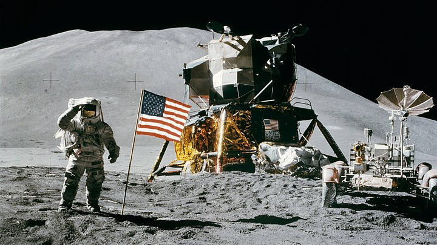

Les missions Apollo ont permis aux premiers humains de marcher sur la Lune en 1969.
Des robots appelés rovers explorent la surface de Mars pour chercher des traces d'eau et comprendre l'histoire de la planète.